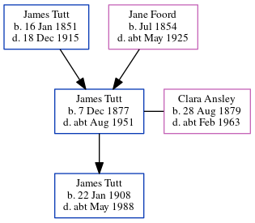

Clara Tutt (née Ansley) 1879 - c1963
[ Home ] | [ Calendar ] | [ Surnames Index ] | [ Errors ] | [ Family History ]Clara Ansley, the wife of James Richard Edmund Tutt (the first cousin twice-removed on the father's side of Nigel Horne), was born in Ramsgate, Kent, England on 28 Aug 18791,2,3 and married James (a fitter with whom she had 1 child, James Alfred William) at Holy Trinity Church in Ramsgate on 24 Apr 19055.
During her life, she was living at 6 Pleasant Place, Margate, Kent, England on 2 Apr 19116 and on 29 Sept 19391.
She died c. Feb 1963 in Dover, Kent, England4.
Children
- James Alfred William was born on 22 Jan 1908
Citations
- 1939 Register - Findmypast (was recorded at this address)
- England Marriages 1538-1973 - Findmypast
- Kent, Canterbury Archdeaconry marriages 1538-1928 - Findmypast
- England & Wales deaths 1837-2007 - Findmypast
- Kent, Canterbury Archdeaconry marriages 1538-1928 - Findmypast
- 1911 Census for England & Wales - Findmypast (was age 31 and the wife of the head of the household)
Media
1911 England, Wales & Scotland Census Transcription - GBC-1911-RG14-04494-0429-1
Kent, Canterbury Archdeaconry marriages 1538-1928 - GBPRS/CANT/M/97034876/2
1939 Register Transcription - TNA-R39-1755-1755G-002-13
England Marriages 1538-1973 - R_848238413/2
England & Wales marriages 1837-2008 - BMD/M/1905/2/AZ/000009/042
England & Wales births 1837-2006 - BMD/B/1879/3/AZ/000013/206
1911 Census for England & Wales - GBC/1911/RG14/04494/0429/2
1939 Register - TNA/R39/1755/1755G/002/12
England & Wales deaths 1837-2007 - BMD/D/1963/1/AZ/001015/117
Family Tree
Map
Generated by ged2site. Last updated on Jul 3, 2024
Known Issues
Apr 2, 1911: not living at same address as spouse James Tutt ('6 Pleasant Place, Margate, Kent, England'/'5 Pleasant Place, Margate, Kent, England')
James Tutt residence is very close probably should be recorded as the same address (' 5 Pleasant Place, Margate, Kent, England'/' 6 Pleasant Place, Margate, Kent, England') in 1911
No records of living with anyone